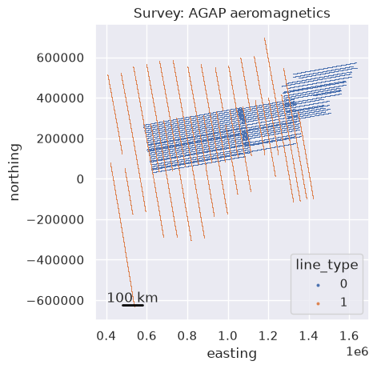
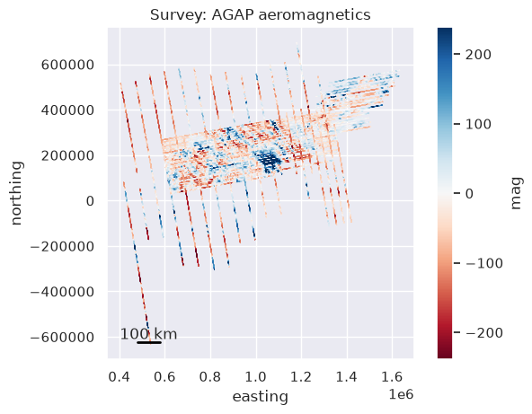
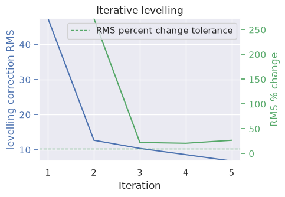

The Survey object#
Most of airbornegeo’s functions take a dataframe plus the names of the columns they need (line_column, distance_column, time_column, …), which quickly gets repetitive. The airbornegeo.Survey class stores the dataframe together with those column names, a coordinate reference system, free-form metadata, and the survey’s intersection table, and exposes most package functions as methods which fill the column names in for you.
Two kinds of methods:
Methods which add or alter a few columns (e.g.
along_track_distance,filter_line, the crossover pipeline) operate in place onsurvey.dataand return the survey itself, so calls can be chained.Methods which replace the whole dataframe (
block_reduce,resample,resample_as) return a newSurvey, leaving the original untouched.
Summary statistics (bounding region, line counts, line lengths, spacings, and orientations) are computed lazily the first time you access them and cached afterwards.
The functional API is unchanged — every method simply wraps the function of the same name.
[1]:
%load_ext autoreload
%autoreload 2
import logging
import numpy as np
import pandas as pd
import airbornegeo
# setup logging to get some additional info from the airbornegeo functions
logging.getLogger("airbornegeo").setLevel("INFO")
logging.basicConfig()
Load data#
This is a subset of the BAS AGAP aeromagnetic survey over Antarctica’s Gamburtsev Subglacial Mountains, already processed and block-reduced (see the notebooks AGAP_magnetic_survey and processing_AGAP_magnetics). We mark the ~E-W survey lines with line_type=0 and the ~N-S tie lines with line_type=1.
[2]:
df = pd.read_csv("data/AGAP_magnetic_survey_processed_blocked.csv")
df = df[["easting", "northing", "height", "line", "unixtime", "mag"]]
df = df.dropna(subset="mag")
# for speed, limit the number of lines
df = df[~df.line.between(133, 142)]
df = df[~df.line.between(168, 176)]
df = df[(df.line.isin(df.line.unique()[::2])) | (df.line >= 143)]
# define survey lines (0) vs tie lines (1)
df["line_type"] = np.where(df.line >= 142, 1, 0)
df.head()
[2]:
| easting | northing | height | line | unixtime | mag | line_type | |
|---|---|---|---|---|---|---|---|
| 0 | 621152.853769 | 159064.167598 | 4112.55 | 1 | 1.229500e+09 | -34.245 | 0 |
| 1 | 621367.339673 | 159092.051982 | 4119.45 | 1 | 1.229500e+09 | -37.740 | 0 |
| 2 | 621580.287957 | 159122.206492 | 4124.15 | 1 | 1.229500e+09 | -40.975 | 0 |
| 3 | 621766.100699 | 159150.747140 | 4127.50 | 1 | 1.229500e+09 | -43.430 | 0 |
| 4 | 621924.954435 | 159176.326498 | 4131.00 | 1 | 1.229500e+09 | -45.300 | 0 |
Create a Survey#
We pass the dataframe once, along with the names of its structural columns, the coordinate reference system, and any metadata we want to keep with it. Only the projected coordinates default to a name (easting/northing, which the rest of the package requires); every other column must be named explicitly, since naming conventions vary too much between surveys to guess. Name them once here and every method will use them — a method needing a binding you did not set raises a ValueError
telling you which one.
The repr shows the column bindings and which statistics have been computed so far — none yet, since they are lazy.
[3]:
survey = airbornegeo.Survey(
df,
line_column="line",
line_type_column="line_type",
distance_column="distance_along_line",
time_column="unixtime",
height_column="height",
crs="EPSG:3031",
metadata={"survey": "AGAP aeromagnetics", "source": "BAS"},
)
survey
[3]:
Column attributes
| line | line |
| line_type | line_type |
| distance | distance_along_line |
| time | unixtime |
| height | height |
| latitude | not set |
| longitude | not set |
CRS & metadata2 metadata entries
| crs | EPSG:3031 |
| survey | AGAP aeromagnetics |
| source | BAS |
Statistics0/8 computed — access an attribute or call .describe()
| region | not computed |
| line_counts | not computed |
| line_lengths | not computed |
| total_length | not computed |
| median_line_lengths | not computed |
| line_azimuths | not computed |
| mean_line_azimuths | not computed |
| median_line_spacings | not computed |
IntersectionsNone
None — call create_intersection_table()
Datafirst 5 rows
| easting | northing | height | line | unixtime | mag | line_type | |
|---|---|---|---|---|---|---|---|
| 0 | 621152.853769 | 159064.167598 | 4112.55 | 1 | 1.229500e+09 | -34.245 | 0 |
| 1 | 621367.339673 | 159092.051982 | 4119.45 | 1 | 1.229500e+09 | -37.740 | 0 |
| 2 | 621580.287957 | 159122.206492 | 4124.15 | 1 | 1.229500e+09 | -40.975 | 0 |
| 3 | 621766.100699 | 159150.747140 | 4127.50 | 1 | 1.229500e+09 | -43.430 | 0 |
| 4 | 621924.954435 | 159176.326498 | 4131.00 | 1 | 1.229500e+09 | -45.300 | 0 |
Plotting#
The plot() method plots a simple overview map of the survey data.
[4]:
survey.plot(
color_by="line_type",
categorical=True,
label_categories=True,
)
[4]:
<Axes: title={'center': 'Survey: AGAP aeromagnetics'}, xlabel='easting', ylabel='northing'>
/home/mdtanker/airbornegeo/.pixi/envs/docs/lib/python3.14/site-packages/IPython/core/events.py:100: UserWarning: Creating legend with loc="best" can be slow with large amounts of data.
func(*args, **kwargs)

[5]:
survey.plot(color_by="mag")
[5]:
<Axes: title={'center': 'Survey: AGAP aeromagnetics'}, xlabel='easting', ylabel='northing'>

Summary statistics#
Each statistic is computed on first access and cached. Accessing them again is free, and the cache is cleared automatically whenever a method changes the survey’s geometry (e.g. re-splitting lines or block-reducing).
[6]:
survey.region
[6]:
(405984.1809454474, 1636623.976977538, -632145.6203212709, 696582.6964278754)
[7]:
survey.line_counts
[7]:
{'total': 121, 'flight': 66, 'tie': 55}
Line spacings are estimated per line type with airbornegeo.median_line_spacing, and line orientations are compass azimuths (degrees clockwise from north, in the axial 0–180° range) of each line’s minimum rotated bounding box.
[8]:
survey.median_line_spacings
[8]:
{'flight': 9729.398917801933, 'tie': 33189.404584862554}
[9]:
survey.mean_line_azimuths
[9]:
{'flight': 79.95350457799643, 'tie': 169.98710022379905}
describe() computes everything at once and returns a formatted summary.
[10]:
print(survey.describe())
airbornegeo.Survey (199,181 rows x 7 cols)
crs: EPSG:3031
metadata: {'survey': 'AGAP aeromagnetics', 'source': 'BAS'}
region (W, E, S, N): 405,984.2, 1,636,624.0, -632,145.6, 696,582.7
line counts: total: 121, flight: 66, tie: 55
total length: 39,902,272.0
median line lengths: flight: 314,764.2, tie: 254,021.9
mean line azimuths: flight: 80.0, tie: 170.0
median line spacings: flight: 9,729.4, tie: 33,189.4
[11]:
survey
[11]:
Column attributes
| line | line |
| line_type | line_type |
| distance | distance_along_line |
| time | unixtime |
| height | height |
| latitude | not set |
| longitude | not set |
CRS & metadata2 metadata entries
| crs | EPSG:3031 |
| survey | AGAP aeromagnetics |
| source | BAS |
Statisticsall computed
| region | 405,984.2, 1,636,624.0, -632,145.6, 696,582.7 |
| line_counts | total: 121, flight: 66, tie: 55 |
| line_lengths | 121 lines | min 29,231.3 | median 285,371.2 | max 745,183.6 |
| total_length | 39,902,272.0 |
| median_line_lengths | flight: 314,764.2, tie: 254,021.9 |
| line_azimuths | 121 lines | min 79.7 | median 80.1 | max 170.8 |
| mean_line_azimuths | flight: 80.0, tie: 170.0 |
| median_line_spacings | flight: 9,729.4, tie: 33,189.4 |
IntersectionsNone
None — call create_intersection_table()
Datafirst 5 rows
| easting | northing | height | line | unixtime | mag | line_type | |
|---|---|---|---|---|---|---|---|
| 0 | 621152.853769 | 159064.167598 | 4112.55 | 1 | 1.229500e+09 | -34.245 | 0 |
| 1 | 621367.339673 | 159092.051982 | 4119.45 | 1 | 1.229500e+09 | -37.740 | 0 |
| 2 | 621580.287957 | 159122.206492 | 4124.15 | 1 | 1.229500e+09 | -40.975 | 0 |
| 3 | 621766.100699 | 159150.747140 | 4127.50 | 1 | 1.229500e+09 | -43.430 | 0 |
| 4 | 621924.954435 | 159176.326498 | 4131.00 | 1 | 1.229500e+09 | -45.300 | 0 |
Chained processing#
Methods which add columns mutate survey.data in place and return the survey, so processing steps chain naturally. Here we compute the distance along each line (written to the survey’s distance_column) and low-pass filter the magnetic data along each line (written to mag_filtered by default).
[12]:
survey.along_track_distance().filter_line(
data_column="mag",
filter_width=5e3,
)
survey.data[["line", "distance_along_line", "mag", "mag_filtered"]].head()
[12]:
| line | distance_along_line | mag | mag_filtered | |
|---|---|---|---|---|
| 0 | 1 | 0.000000 | -34.245 | -43.331276 |
| 1 | 1 | 216.290873 | -37.740 | -43.601245 |
| 2 | 1 | 431.363573 | -40.975 | -44.356346 |
| 3 | 1 | 619.355444 | -43.430 | -45.353443 |
| 4 | 1 | 780.255453 | -45.300 | -46.457980 |
Frame-replacing methods return a new Survey#
block_reduce, resample and resample_as produce an entirely new dataframe, so instead of overwriting the survey they return a new Survey carrying over the column bindings, CRS and metadata — the original survey is retained.
[13]:
blocked = survey.block_reduce(np.median, spacing=1e3)
print(f"original: {len(survey.data)} rows, blocked: {len(blocked.data)} rows")
blocked
original: 199181 rows, blocked: 39914 rows
[13]:
Column attributes
| line | line |
| line_type | line_type |
| distance | distance_along_line |
| time | unixtime |
| height | height |
| latitude | not set |
| longitude | not set |
CRS & metadata2 metadata entries
| crs | EPSG:3031 |
| survey | AGAP aeromagnetics |
| source | BAS |
Statistics0/8 computed — access an attribute or call .describe()
| region | not computed |
| line_counts | not computed |
| line_lengths | not computed |
| total_length | not computed |
| median_line_lengths | not computed |
| line_azimuths | not computed |
| mean_line_azimuths | not computed |
| median_line_spacings | not computed |
IntersectionsNone
None — call create_intersection_table()
Datafirst 5 rows
| distance_along_line | easting | northing | height | line | unixtime | mag | line_type | mag_filtered | |
|---|---|---|---|---|---|---|---|---|---|
| 0 | 431.363573 | 621580.287957 | 159122.206492 | 4124.15 | 1 | 1.229500e+09 | -40.975 | 0.0 | -44.356346 |
| 1 | 1404.747786 | 622539.892288 | 159285.062530 | 4132.50 | 1 | 1.229500e+09 | -52.120 | 0.0 | -51.829202 |
| 2 | 2415.422455 | 623536.992161 | 159449.894800 | 4139.05 | 1 | 1.229500e+09 | -62.010 | 0.0 | -60.887993 |
| 3 | 3419.398294 | 624526.483998 | 159619.624326 | 4135.10 | 1 | 1.229500e+09 | -68.640 | 0.0 | -67.645305 |
| 4 | 4408.347291 | 625502.244274 | 159779.941260 | 4148.40 | 1 | 1.229501e+09 | -72.140 | 0.0 | -72.333324 |
Crossovers and levelling#
The crossover pipeline stores the intersection table on the survey as survey.intersections and updates it, together with survey.data, as each chained step runs. Here we find the intersections between the survey lines and the tie lines (the groups method, using the line_type column), add them to the dataframe, interpolate the magnetic data onto them, and calculate the crossover errors.
(The network method finds intersections between all line pairs instead; note that pairs of lines crossing more than once must be deduplicated before the rest of the pipeline — see the crossovers notebooks for details.)
[14]:
survey.create_intersection_table(
method="groups",
buffer_dist=500,
cutoff_dist=400,
)
survey.intersections.head()
INFO:airbornegeo:found 669 intersections
INFO:airbornegeo:removed 3 intersection point(s) with a max distance greater than 0 km
[14]:
| line1 | line2 | line1_along_dist | line2_along_dist | is_buffered | is_proximity | geometry | easting | northing | max_dist | |
|---|---|---|---|---|---|---|---|---|---|---|
| 0 | 1 | 143 | 545683.269511 | 137763.647746 | False | False | POINT (1158153 254083) | 1158153.0 | 254083.0 | 73.980331 |
| 1 | 1 | 144 | 578867.489410 | 131264.857865 | False | False | POINT (1190820 259865) | 1190820.0 | 259865.0 | 91.228123 |
| 2 | 1 | 145 | 612096.925761 | 146939.686838 | False | False | POINT (1223524 265689) | 1223524.0 | 265689.0 | 77.978287 |
| 3 | 1 | 146 | 645286.779258 | 135889.427157 | False | False | POINT (1256193 271497) | 1256193.0 | 271497.0 | 62.334186 |
| 4 | 1 | 147 | 678513.585282 | 154819.157039 | False | False | POINT (1288902 277249) | 1288902.0 | 277249.0 | 99.009111 |
[15]:
survey.add_intersections().interpolate_intersections(
to_interp="mag"
).calculate_crossover_errors(data_col="mag")
survey.intersections.crossover_error_0.describe()
[15]:
count 664.000000
mean 7.640998
std 43.030551
min -97.282149
25% -27.513072
50% 5.989165
75% 40.616310
max 160.057662
Name: crossover_error_0, dtype: float64
Now we can level the survey using those crossover errors. The network levelling method updates both survey.data (adding the mag_levelled column) and survey.intersections (appending a new crossover_error_N column per iteration).
[16]:
survey.crossover_network_levelling(
data_col="mag",
levelled_col="mag_levelled",
degree=1,
max_iterations=5,
)
WARNING:airbornegeo:
Levelling terminated after 5 iterations with RMS of levelling correction of 6.79 because maximum number of iterations (5) reached.

[16]:
Column attributes
| line | line |
| line_type | line_type |
| distance | distance_along_line |
| time | unixtime |
| height | height |
| latitude | not set |
| longitude | not set |
CRS & metadata2 metadata entries
| crs | EPSG:3031 |
| survey | AGAP aeromagnetics |
| source | BAS |
Statistics0/8 computed — access an attribute or call .describe()
| region | not computed |
| line_counts | not computed |
| line_lengths | not computed |
| total_length | not computed |
| median_line_lengths | not computed |
| line_azimuths | not computed |
| mean_line_azimuths | not computed |
| median_line_spacings | not computed |
Intersections664 rows
664 intersections with columns: ['line1', 'line2', 'line1_along_dist', 'line2_along_dist', 'is_buffered', 'is_proximity', 'geometry', 'easting', 'northing', 'max_dist', 'dist_along_line1', 'dist_along_line2', 'line1_interpolation_type', 'line2_interpolation_type', 'crossover_error_0', 'crossover_error_1', 'crossover_error_2', 'crossover_error_3', 'crossover_error_4', 'crossover_error_5']
Datafirst 5 rows
| easting | northing | height | line | unixtime | mag | line_type | distance_along_line | mag_filtered | is_intersection | intersecting_line | mag_interpolation_type | mag_levelled | |
|---|---|---|---|---|---|---|---|---|---|---|---|---|---|
| 0 | 621152.853769 | 159064.167598 | 4112.55 | 1 | 1.229500e+09 | -34.245 | 0.0 | 0.000000 | -43.331276 | False | NaN | none | -25.597772 |
| 1 | 621367.339673 | 159092.051982 | 4119.45 | 1 | 1.229500e+09 | -37.740 | 0.0 | 216.290873 | -43.601245 | False | NaN | none | -29.097845 |
| 2 | 621580.287957 | 159122.206492 | 4124.15 | 1 | 1.229500e+09 | -40.975 | 0.0 | 431.363573 | -44.356346 | False | NaN | none | -32.337889 |
| 3 | 621766.100699 | 159150.747140 | 4127.50 | 1 | 1.229500e+09 | -43.430 | 0.0 | 619.355444 | -45.353443 | False | NaN | none | -34.797299 |
| 4 | 621924.954435 | 159176.326498 | 4131.00 | 1 | 1.229500e+09 | -45.300 | 0.0 | 780.255453 | -46.457980 | False | NaN | none | -36.671072 |
[17]:
error_cols = [
c for c in survey.intersections.columns if c.startswith("crossover_error_")
]
rms_before = airbornegeo.rmse(survey.intersections[error_cols[0]])
rms_after = airbornegeo.rmse(survey.intersections[error_cols[-1]])
print(f"crossover error RMS: {rms_before:.2f} -> {rms_after:.2f} nT")
crossover error RMS: 43.67 -> 13.42 nT
The functional equivalent of this whole notebook would have passed line_column, distance_column and the intersection table around at every step — with the Survey object they are stored once and injected for you, while airbornegeo’s functions remain available for anything not wrapped as a method (e.g. the Eötvös corrections and plotting utilities).
Saving and reloading a Survey#
Survey has two built-in ways to save and reload its full state — the data, the intersection table (if any), the CRS, the metadata, and the column-name bindings:
``to_parquet``/``from_parquet`` (recommended): the data and intersections are saved as Parquet files, plus a small JSON sidecar for the CRS/metadata/bindings. Parquet preserves dtypes exactly and is fast and compact, so prefer it unless you need a plain-text format.
``to_csv``/``from_csv``: the same layout, but with CSV data files instead. Maximally portable and human-readable, at the cost of dtype fidelity (e.g. integer columns come back as floats) and file size.
Either way, the main data file is a plain Parquet/CSV file with no airbornegeo-specific encoding — anyone can read <path>.parquet/<path>.csv with bare pandas, no airbornegeo import required.
[ ]:
import tempfile
from pathlib import Path
# replace this with your real local path you want to use
example_path = Path(tempfile.mkdtemp()) / "agap_survey"
# save the survey to the set path
survey.to_parquet(example_path)
# show the 3 file which were created
sorted(p.name for p in example_path.parent.iterdir())
['agap_survey.json',
'agap_survey.parquet',
'agap_survey_intersections.parquet']
[19]:
reloaded = airbornegeo.Survey.from_parquet(example_path)
reloaded
[19]:
Column attributes
| line | line |
| line_type | line_type |
| distance | distance_along_line |
| time | unixtime |
| height | height |
| latitude | not set |
| longitude | not set |
CRS & metadata2 metadata entries
| crs | EPSG:3031 |
| survey | AGAP aeromagnetics |
| source | BAS |
Statistics0/8 computed — access an attribute or call .describe()
| region | not computed |
| line_counts | not computed |
| line_lengths | not computed |
| total_length | not computed |
| median_line_lengths | not computed |
| line_azimuths | not computed |
| mean_line_azimuths | not computed |
| median_line_spacings | not computed |
Intersections664 rows
664 intersections with columns: ['line1', 'line2', 'line1_along_dist', 'line2_along_dist', 'is_buffered', 'is_proximity', 'geometry', 'easting', 'northing', 'max_dist', 'dist_along_line1', 'dist_along_line2', 'line1_interpolation_type', 'line2_interpolation_type', 'crossover_error_0', 'crossover_error_1', 'crossover_error_2', 'crossover_error_3', 'crossover_error_4', 'crossover_error_5']
Datafirst 5 rows
| easting | northing | height | line | unixtime | mag | line_type | distance_along_line | mag_filtered | is_intersection | intersecting_line | mag_interpolation_type | mag_levelled | |
|---|---|---|---|---|---|---|---|---|---|---|---|---|---|
| 0 | 621152.853769 | 159064.167598 | 4112.55 | 1 | 1.229500e+09 | -34.245 | 0.0 | 0.000000 | -43.331276 | False | NaN | none | -25.597772 |
| 1 | 621367.339673 | 159092.051982 | 4119.45 | 1 | 1.229500e+09 | -37.740 | 0.0 | 216.290873 | -43.601245 | False | NaN | none | -29.097845 |
| 2 | 621580.287957 | 159122.206492 | 4124.15 | 1 | 1.229500e+09 | -40.975 | 0.0 | 431.363573 | -44.356346 | False | NaN | none | -32.337889 |
| 3 | 621766.100699 | 159150.747140 | 4127.50 | 1 | 1.229500e+09 | -43.430 | 0.0 | 619.355444 | -45.353443 | False | NaN | none | -34.797299 |
| 4 | 621924.954435 | 159176.326498 | 4131.00 | 1 | 1.229500e+09 | -45.300 | 0.0 | 780.255453 | -46.457980 | False | NaN | none | -36.671072 |
The data file needs nothing but pandas to read — no airbornegeo import required:
[20]:
import pandas as pd
pd.read_parquet(example_path.with_suffix(".parquet")).head()
[20]:
| easting | northing | height | line | unixtime | mag | line_type | distance_along_line | mag_filtered | is_intersection | intersecting_line | mag_interpolation_type | mag_levelled | |
|---|---|---|---|---|---|---|---|---|---|---|---|---|---|
| 0 | 621152.853769 | 159064.167598 | 4112.55 | 1 | 1.229500e+09 | -34.245 | 0.0 | 0.000000 | -43.331276 | False | NaN | none | -25.597772 |
| 1 | 621367.339673 | 159092.051982 | 4119.45 | 1 | 1.229500e+09 | -37.740 | 0.0 | 216.290873 | -43.601245 | False | NaN | none | -29.097845 |
| 2 | 621580.287957 | 159122.206492 | 4124.15 | 1 | 1.229500e+09 | -40.975 | 0.0 | 431.363573 | -44.356346 | False | NaN | none | -32.337889 |
| 3 | 621766.100699 | 159150.747140 | 4127.50 | 1 | 1.229500e+09 | -43.430 | 0.0 | 619.355444 | -45.353443 | False | NaN | none | -34.797299 |
| 4 | 621924.954435 | 159176.326498 | 4131.00 | 1 | 1.229500e+09 | -45.300 | 0.0 | 780.255453 | -46.457980 | False | NaN | none | -36.671072 |